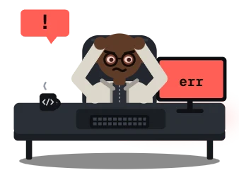
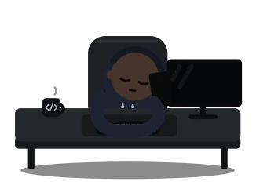

Claude Code, Codex and the rest run as the real CLIs, each in a terminal of its own and drawn as a person at a desk.
When one needs you, their hand goes up.
The app's own window, showing its demo data. The amber band names the agent who needs you.
What each pose means
needs youA hand up. It has stopped on a question only you can answer.
workingTyping, with code on the screen.
doneLeaning back. It finished something you have not looked at yet.
idleSitting at a prompt, with nothing to do.

troubleHands on their head. The program stopped with an error.

awayAsleep. Not running; the desk keeps where they left off.
The facts
The real programs
It starts the claude or codex you already have, the way your terminal does, with your own sign-ins and settings.
Everything under a pane's header is the program's own screen, and you answer a question where the program asks it.
Fourteen CLIs, and yours
Claude Code, Codex, Antigravity CLI, Hermes, Gemini CLI, OpenCode, Copilot CLI, Amp, Qwen Code, Crush, Cursor CLI, Aider, Goose and Droid.
Add any other with a few lines of JSON.
Close the window; they keep working
The agents carry on from the tray. When one needs you, the tray icon gets an amber dot and a notification names the agent.
No account, no telemetry
The app has no analytics. It asks npm and GitHub whether newer versions are out, which can be turned off.
Voice input is off until you turn it on, and runs on your computer unless you choose a cloud provider and give it your own key.
What it does not do
It shows only the agents you start from it. It merges nothing and shows no diffs: that stays with git and the CLI.
Every known gap is in the list of limits.
Download
You need at least one agent CLI, installed and signed in the way its makers say. The office can install the ones published on npm for you.
Windows
Windows 11, 64-bit, where it is used every day. Windows 10 is untried.
The first time: an AppImage has to be made runnable: chmod +x the file, then start it.
Or in a terminal, which picks the right one:
curl -fsSL https://agentmoshpit.com/install.sh | sh
The app is not signed with a paid certificate yet, which is why Windows asks the first time and why macOS is given a command instead of a file to click.
All downloads and the release notes are on GitHub. If the macOS or Linux build fails you, say what breaks.